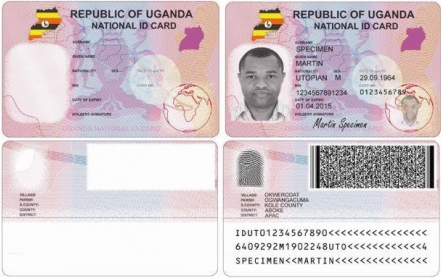

REQUIREMENTS FOR A NATIONAL IDENTIFICATION CARD

APPLICANTS MUST PRESENT THE FOLLOWING DOCUMENTS FOR REGISTRATION:
(i) A duly completed NIRA form 3 to be issued to you at the Embassy
(ii) Carry and submit the following supporting documents to prove citizenship:
1) Citizens by birth/descent
Citizens of Uganda by birth must present the following requirements:
● Copy of National ID of both or either parent (if parents are alive)
● A certified copy of a birth certificate
● Ugandan Passport
In the absence of the above, attach the following:
a) Recommendation letter from LC 1 chairman stating clearly that applicant is known indicating,
● Applicant's names
● Details of parents
● Period of stay in LC1 locality
● Tribe and clan
The letter should be signed with official stamp of LC1 Chairperson (include Telephone contact) and GISO/DISO
b) Identification bearing applicant's photo
2) Dual Citizenship
● Certified copy of certificate of Dual Citizenship
● Passport of current country of residence
3) Citizens by Registration
● Certified copy of Certificate of Citizenship by registration issued by National
Citizenship and Immigration Control Board (NCIB)
● Identification bearing applicant's photo
4) Naturalization
● Certified copy of Certificate of Naturalization as Ugandan issued by NCIB
● Identification bearing applicant's photo
APPLYING WHILE ABROAD / OUT OF THE COUNTRY
Citizens of Uganda in North America, South America and the Caribbean can make an online appointment to register at the Uganda Embassy in Washington DC. Please send an email to KKasibayo@ugandaembassyus.org to request an appointment. Please provide a reliable call-back number. Please note that the applicant must appear in person for the interview and registration process.
In preparation for your Citizenship enrollment, if you are Ugandan by descent you will need to know a number facts about your own birth,origin in Uganda, residence, ethnicity and similar details concerning your parents,.
All applicants are advised to prepare the following information that is required to fill the Enrollment Form, (with all necessary supporting documents If readily available);
● Full name of the applicant
● Residential address
● Date of birth
● Place of birth
● Indigenous community/tribe to which the applicant belongs
● Place of origin
● Occupation/profession
● Spouse's name
● Parents name, nationality, tribe and clan
Documents such as Marriage Certificates and/or Baptism Cards are not compulsory at Registration but may be used in the absence of other primary documents.
CHANGE OF PARTICULARS
This service is available to persons who have made changes in their civil status. These changes include; change of name after marriage,change of location, change of name and others. Please allow a period of Information update. Applicants will be required to come with a document or a combination of any of the following documents depending on the type of change:-
● Marriage certificate
● Deed poll
● School leaving certificates
● Statutory Declarations
● Divorce certificates
● Payment receipt
● Any other as the case maybe.